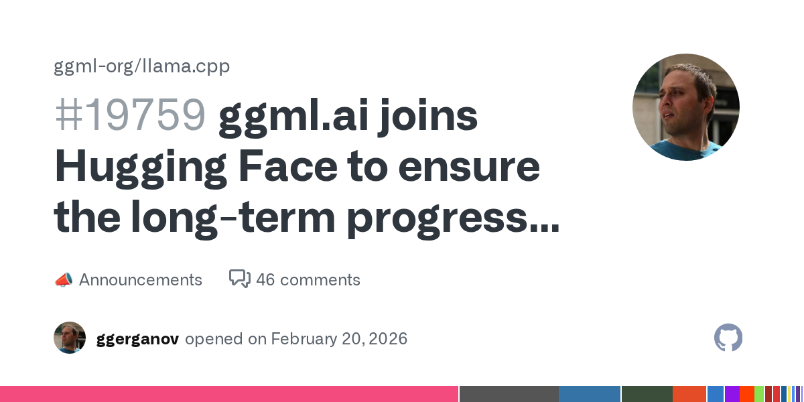

Negocios/AI · Destacado
GGML + Hugging Face: señal fuerte para el ecosistema open-source
Movimiento relevante para distribución y adopción de modelos locales. Puede impactar tooling, velocidad de integración y narrativa comercial para clientes técnicos.
Ir a la fuente